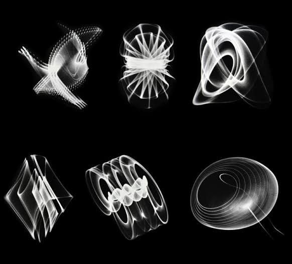

Digital Art incorportates all styles of art including abstract, modern, pop art, and more, it is just done digitally.
History
One of the first examples of digital art is done by mathmetician Benjamin Laposky, who is credited with making the first
computer graphics, utilizing an oscilloscope to create abstract art in the 1950s.
 Throughout the 1960s, digital art was difficult to create for those who were not mathmeticians or programmers due to
the lack of accessibility of computers. It was more in the mid 80s where artists no longer had to rely on their connections
with scientists, mathmeticians, programmers, or university faculty to create their own digital artwork. The 1991 creation of
the World Wide Web was a great time for artists to come alive because more and more computers were normalized in the household.